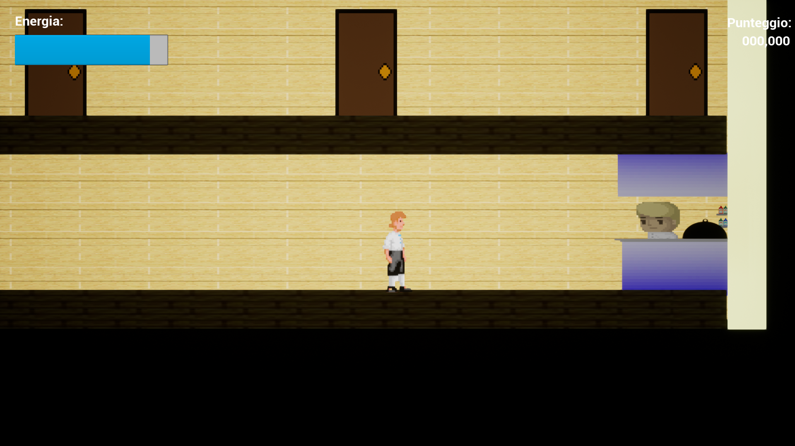
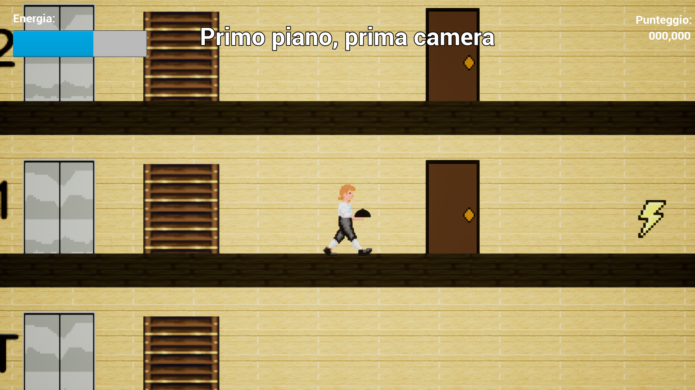
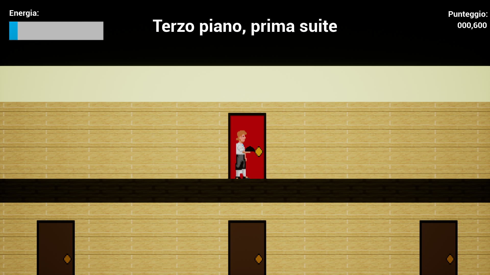

Cameriere
Serve, climb, and deliver - the high-rise hotel hustle!
Developed over the course of 2 months in a group with another student as a practical assignment for the "Module 431 - Carrying out IT mandates autonomously" class (rough translation) during the second year of my education at SAM Trevano, 2018, Cameriere is a simple 2D walking simulator, in which the player steps into the shoes of a waiter ("cameriere" in Italian) that needs to bring room service from the kitchen on the bottom floor to one of the requested rooms on the three floors where guests are staying.

Image 1 | View of the kitchen on the bottom floor.
Once near enough to the chef, the tray is grabbed, and a message appears indicating
which room to head towards.


Image 3 | View of the first floor. The text at the top
(which roughly translates to "First floor, first room") indicates to which room the food
needs to be delivered by interacting with it. The "Energy" bar on top-left hand corner
indicates how much energy the player has left before their game ends, which depletes as
they move, and runs out faster if they sprint. Finally, the "Score" counter on the
top-right hand corner shows the amount of points collected so far.

Image 4 | View of the third floor, with fewer suites, which are more
luxurious than regular rooms. Their allure beckons you, drawn towards the unfathomable luxury behind
those doors. But alas, you're a mere waiter, it is not your business to bask in the fruits of the high society.